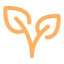
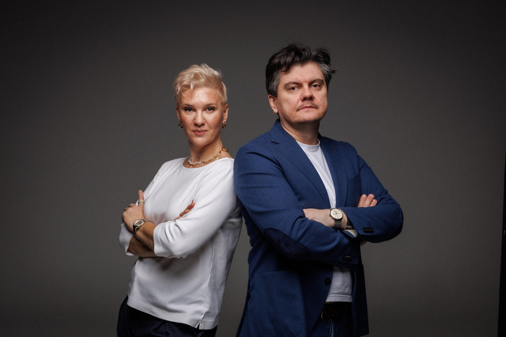
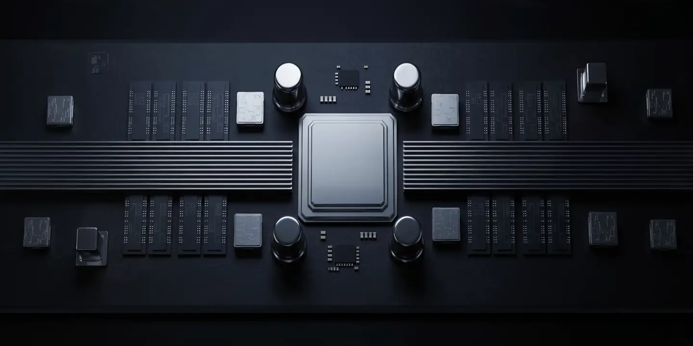
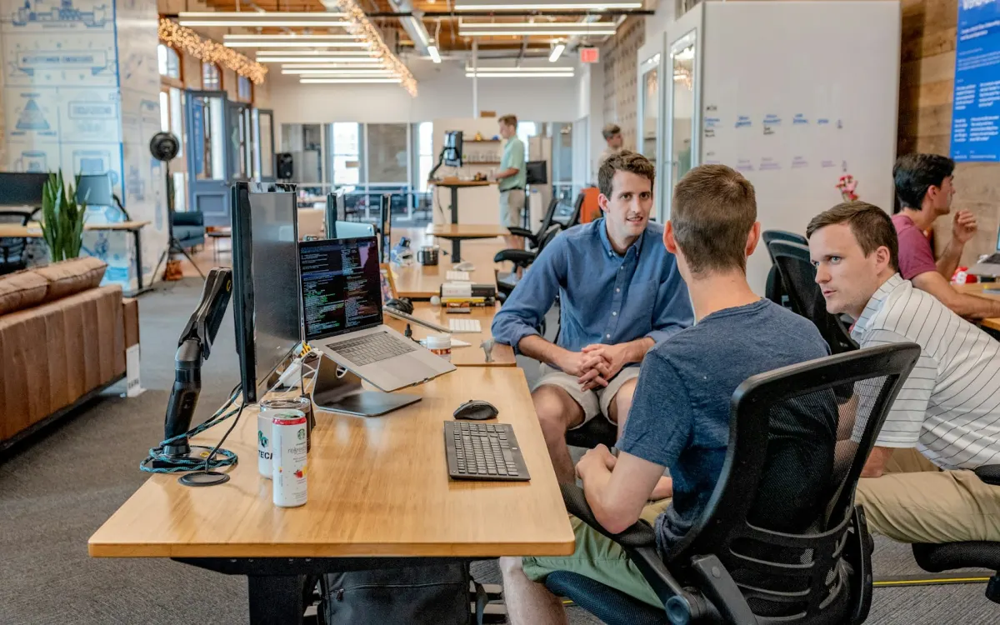
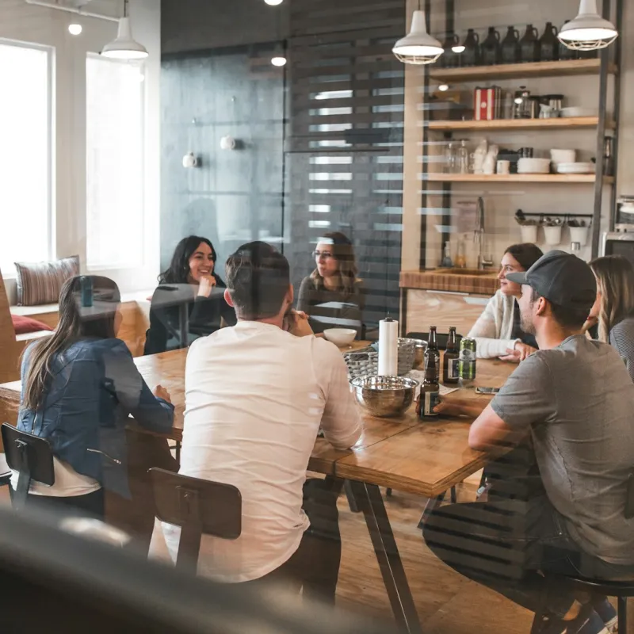
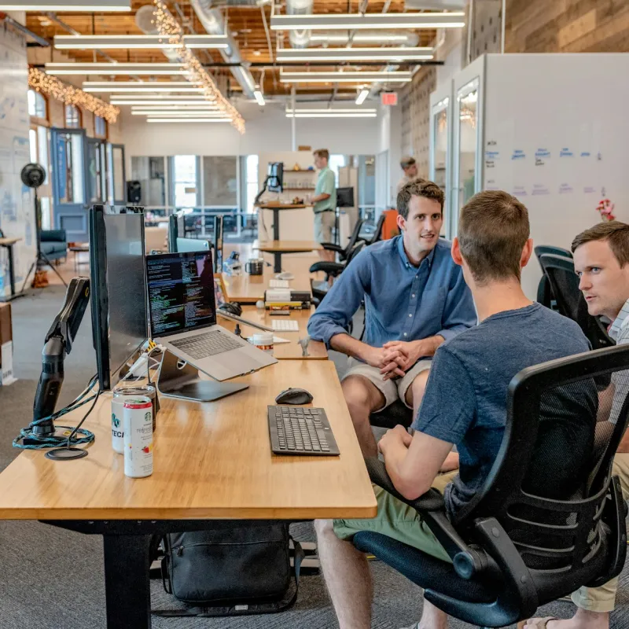
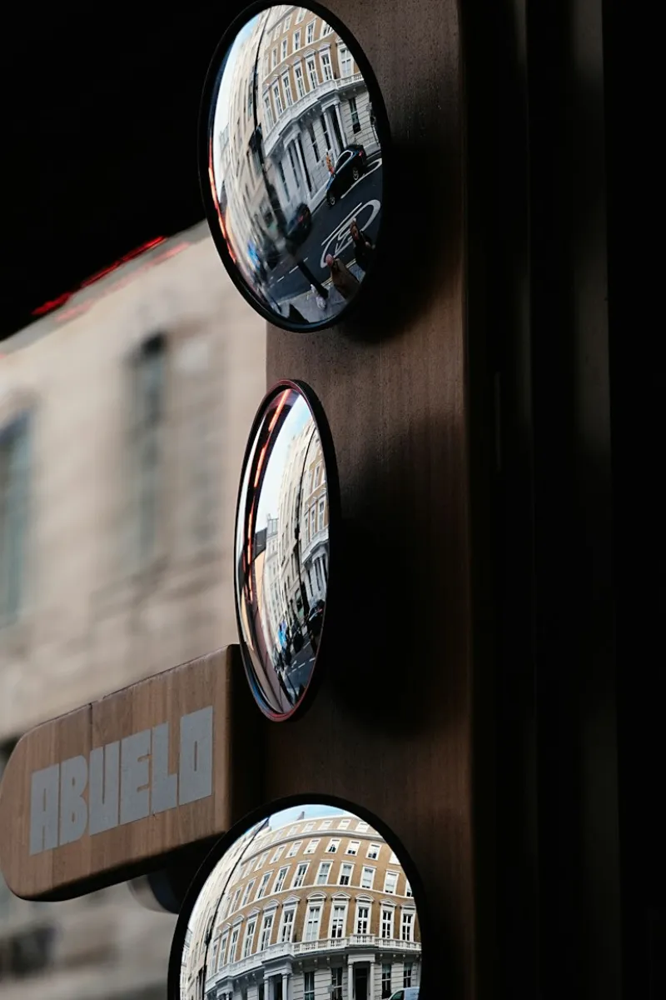
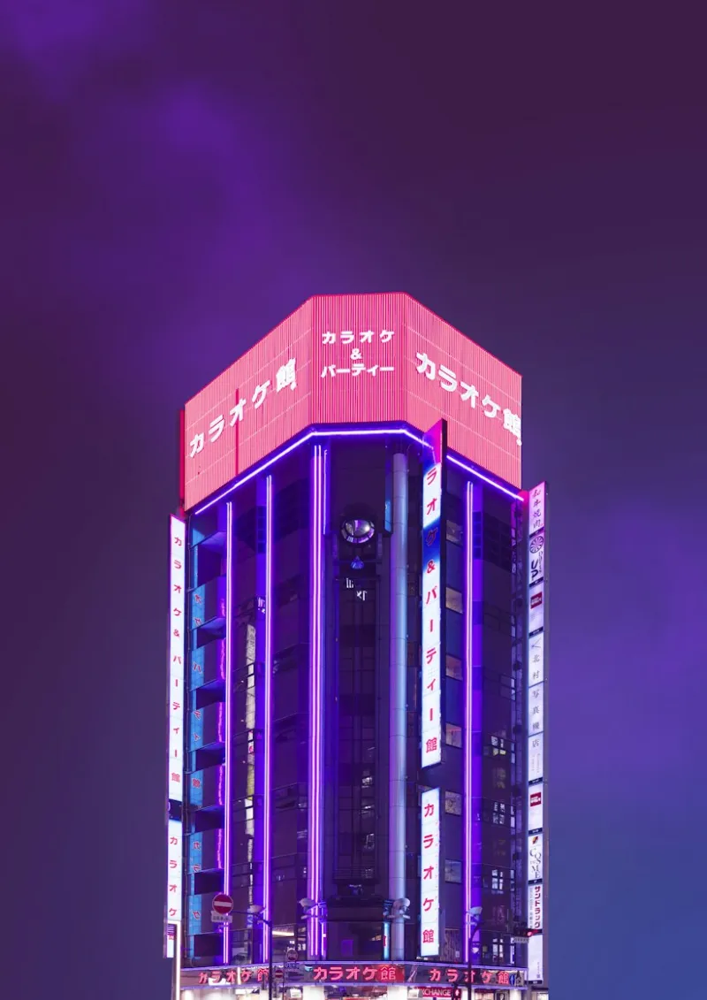
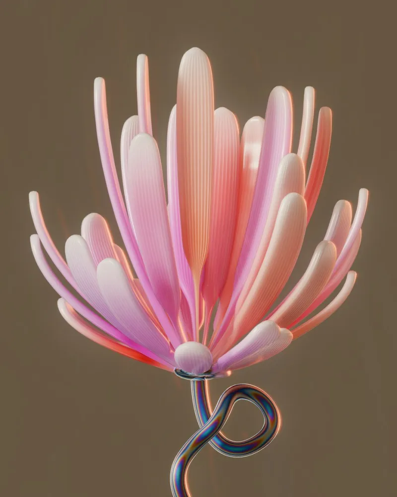

Ваша компанія здатна на більше ATLAS покаже, що стримує її зростання
ATLAS — доказова діагностика зростання IT-компаній від Daat. Ми знаходимо системи й елементи, що стримують розвиток вашої компанії, пропонуємо найкращі практики delivery та технічної досконалості — і допомагаємо їх упровадити. Перший результат — уже за 4–5 тижнів.
Ми пишаємося нашими клієнтами

Що стримує зростання? Рідко ринок. Частіше — процеси, ролі й рішення всередині компанії.
Діагностика зростання — це незалежна доказова оцінка того, які системи та елементи IT-компанії прискорюють її розвиток, а які стримують: стратегія, управління, delivery, інженерна культура, лідерство, люди й компетенції. ATLAS простежує кожне обмеження до першопричини й показує, що змінити, щоб компанія могла рости далі.
У 2026 році зростати по-старому вже не виходить: клієнти вимагають передбачуваності та якості, ринок — зрілого delivery, а AI змінює те, що здатна зробити невелика команда. Компанії, які вчасно перебудовують свої системи, відриваються від решти.
-
Зростання вперлося в стелю: більше людей більше не дає більше результату.
Операційна система delivery не масштабується: немає стандартизованого SDLC, а процеси тримаються на героїзмі окремих людей.
-
Кожне велике рішення досі проходить через вас.
Засновник як єдина точка інтеграції: компанія не може рости швидше, ніж дозволяє його календар.
-
Ви запускаєте правильні ініціативи, але вони не приживаються.
Дизайн випереджає впровадження: фреймворки є на папері, а ресурсу й залученості, щоб їх прийняти, — немає.
-
Нові проєкти приносять виручку, але не приносять прибутку.
Оцінка й скоуп: угоди продаються без Discovery та без участі delivery, тож команда платить за це переробками.
-
Якість нестабільна, а код, згенерований AI, ніхто системно не перевіряє.
Технічна досконалість без власника: немає інженерних стандартів, code review і гейтів якості.
-
Команда постійно гасить пожежі — на розвиток часу немає.
Команда постійно гасить пожежі — на розвиток часу немає.
Приклад із практики: у компанії на ~50 людей п’ятеро керівників, кожен в окремому інтерв’ю, назвали ту саму головну перешкоду зростанню. Клієнт почав її усувати ще до фінального звіту.
Знахідки аудитівЧому Daat?

-
Погляд ззовні, досвід зсередини
Діагностику ведуть люди, які самі будували delivery та інженерію як CTO, — а не універсали з шаблоном.
-
Докази, а не думки
Кожна оцінка спирається на документи, інтерв’ю та дані систем — з рейтингом надійності й довірчим інтервалом.
-
Не лише діагноз — упровадження
Ми пропонуємо найкращі практики delivery й технічної досконалості під ваш рівень зрілості — і впроваджуємо їх разом із вашою командою.
-
Шось четверте
Ми пропонуємо найкращі практики delivery й технічної досконалості під ваш рівень зрілості — і впроваджуємо їх разом із вашою командою.

Для кого ATLAS: оберіть свою ситуацію
ATLAS відкалібровано для IT-сервісних і продуктових компаній на 50–500 FTE. Одна методологія, одна шкала зрілості — і три погляди на компанію:
Ви власник, CEO або новий керівник delivery і хочете зрозуміти, що стримує компанію на наступному етапі.
-
- Знаходить, де система зламається наступною, — ще до того, як туди дійде зростання.
- Відрізняє героїзм окремих людей від системи.
- Вибудовує розвиток там, де зростання тисне першим.
- Захищає те, що вже працює, поки ви масштабуєтесь.
-
- Показує, який важіль насправді зламався, — замість здогадок.
- Відділяє проблему попиту від проблеми delivery.
- Висвітлює економіку, якої компанія досі не бачить.
- Спрямовує діагноз на правильний наступний крок — зокрема на позиціонування, коли ніші немає.
-
- Спершу відповідає на розвилку, а вже потім ставить оцінку: який шлях зростання реально витримає ваш delivery.
- Для органічного шляху перевіряє, чи витримає система більше навантаження без втрати якості.
- Для шляху через покупця ставить дзеркальне до due diligence питання: чи варта ваша система того, щоб у неї вливатися?
- Перетворює готовність на контрольну точку зі списком того, що добудувати, — а не на «так/ні».
-
- Закриває розрив між «достатньо добре» і «достатньо доказово» для enterprise-покупців.
- Зіставляє реальну зрілість компанії з планкою, яку очікує цільовий сегмент.
- Вибудовує розвиток під конкретний сегмент, на який ви цілитеся, а не під абстрактну зрілість.
- Перетворює докази зрілості на інструмент продажу, а не лише на внутрішню оцінку.
-
- Страхує від хибних рішень у найдорожчий для нового керівника період.
- Показує, що варто зберегти, а не лише що треба виправити.
- Читає політичну карту компанії, не стаючи її заручником.
- Фіксує стартову точку, від якої згодом видно вплив нового керівника.
-
- Веде стабілізацію й діагностику паралельно, кожну у своєму темпі.
- Доводить, що три пожежі мають один корінь.
- Знаходить причину, яку підтверджують кілька незалежних джерел, а не ту, яку найзручніше звинуватити.
- Вибудовує кроки відповідно до запасу часу — і чесно каже, коли він вичерпується.
-
- Перетворює незадокументовані можливості на цінність, яку можна обґрунтувати.
- Б’є по найбільшому чиннику дисконту — залежності від засновника й ключових людей.
- Знаходить приховані ризики раніше, ніж це зробить покупець.
- Подає план усунення недоліків як план створення цінності для покупця.
-
- Перетворює разовий знімок на траєкторію — саме в ній справжній сигнал.
- Помічає регрес, перш ніж він стане кризою.
- Тримає роботу з покращень під контролем доказів.
Ви інвестор, член борду або покупець і хочете знати, що насправді купуєте, — і як цим керувати після угоди.
-
- Починає з вашої інвестиційної тези: це швидке сортування ризиків, а не збалансований аудит.
- Перевіряє критично й спирається передусім на дані систем, а не на презентації.
- Першими шукає ризики, що можуть зірвати угоду, — у порядку, який найшвидше перевірить тезу.
- Те, що не вдалося перевірити за відведений час, стає частиною структури угоди, а не приміткою.
-
- Фіксує реальний стан щойно купленого — незалежно від due diligence, яким обґрунтовували купівлю.
- Вибудовує порядок інтеграції за залежностями, щоб злиття не зламало те, заради чого купували.
- Перетворює список зауважень із due diligence на вимірюваний план отримання цінності з контрольною переоцінкою.
-
- Оцінює всі компанії портфеля на одній шкалі зрілості.
- Перетворює разовий знімок кожної компанії на траєкторію — саме в ній справжній сигнал.
- Помічає регрес, перш ніж він стане кризою.
- Тримає роботу з покращень під контролем доказів.
Ви клієнт або відділ закупівель і хочете знати, чи справді підрядник витримає ваш контракт.
-
- Оцінює підрядників із шорт-листа за зрілістю delivery, а не за якістю продажної презентації.
- Порівнює їх на одній шкалі — як рівне з рівним.
- Зважує оцінку відповідно до того, чого насправді потребує конкретний контракт.
- Виявляє ризики, які варто врахувати в ціні та умовах контракту ще до підписання.
-
- Це регулярна перевірка стану, спрямована назовні, — на партнера, збій якого ви не можете собі дозволити.
- Помічає, що постачальник просідає, раніше, ніж це стане вашим інцидентом.
- Відстежує траєкторію, яка важить більше за будь-який разовий знімок.
- Будує управління відносинами на доказах, а не на запевненнях.
Що ATLAS дає власникам і тим, хто ухвалює рішення
Не список із 50 зауважень, а чітка відповідь на два питання: що заважає компанії рости — і як саме це змінити.
-
Одне чесне число
Індекс зрілості за шкалою 1–5 — для кожного енейблера й загалом — із довірчим інтервалом.
Ви одразу бачите, наскільки компанія готова до наступного етапу зростання.
-
Обмеження, які справді стримують
3–6 наскрізних тем і ключова петля, що їх пов’язує: системи й ролі, які гальмують розвиток, — замість зауважень, розкиданих по відділах.
Стає зрозуміло, що розблокувати першим.
-
Найкращі практики — під вашу зрілість
Конкретні практики delivery й технічної досконалості — від Discovery та оцінювання до code review й інженерних стандартів — підібрані під ваш рівень, а не скопійовані з чужої компанії.
Ви робите наступний крок, а не стрибаєте через три.
-
Дорожня карта зростання на 18 місяців
Ініціативи, упорядковані за впливом, ризиком і залежностями на трьох горизонтах, — кожна з відповідальним і критерієм завершення.
Команда знає, з чого почати вже в понеділок.
-
Супровід упровадження
Окремим треком Daat допомагає втілити зміни: налаштувати процеси, інженерні стандарти, гейти якості та управлінські ритуали разом із вашими людьми.
Ви отримуєте результат, а не лише діагноз.
-
Прогрес, який можна виміряти
Усі дані залишаються у вас, а повторна діагностика через 12–15 місяців покаже зростання зрілості в цифрах.
Ви можете довести прогрес борду, інвесторам — і собі.
Що всередині звіту ATLAS — розділ за розділом
Звіт на 60+ сторінок для тих, хто ухвалює рішення: відповідь — на першій сторінці, докази — далі, план зростання з конкретними практиками — наприкінці.
-
01
Резюме для керівництва
Головне на одній сторінці: ключові висновки, що працює, пріоритетні ризики, рекомендований шлях.
-
02
Аналіз за функціями
CEO, фінанси, delivery, продажі й маркетинг, інженерія — кожна функція крізь сім енейблерів і RADAR-IT.
-
03
Синтез по компанії
Ваш індекс зрілості за кожним енейблером із довірчими інтервалами та профіль RADAR-IT для всієї компанії.
-
04
Наскрізна аналітика
Ваші проблеми, зіставлені з типовими знахідками наших delivery-аудитів, і ключова петля, яка їх пов’язує.
-
05
Реєстр ризиків і сильні сторони
Що загрожує зростанню — за ймовірністю та впливом, — і сильні сторони, на які можна спертися під час змін.
-
06
Дорожня карта зростання
Практики, які варто впровадити, три горизонти, відповідальні, критерії завершення та прогноз зростання зрілості.
А також робочі файли, які залишаються у вас:
- Реєстр доказів
- Scorecard зрілості
- Реєстр ризиків
- Мапа тем
- Дорожня карта трансформації
- Хартія повторного аудиту
Ваша дорожня карта зростання: горизонти 0–3, 3–9 і 9–18 місяців
ATLAS не зупиняється на діагнозі. Кожну рекомендовану практику — від delivery до технічної досконалості — пріоритизовано за впливом на зрілість, ризиком, вартістю й залежностями та вибудовано так, щоб спершу знімалися базові обмеження, а потім — усе, що від них залежить. Ви отримуєте терміни, відповідальних і вимірювану фінішну лінію для кожного кроку, а Daat може супроводжувати впровадження на кожному горизонті.
H1 · 0–3 місяці
Стабілізувати й розблокувати
Розірвати коло на вході: звільнити час керівників і навести лад в оцінці, щоб з’явився простір для змін.
-
Захистити час керівників
Відповідальний: CEO · Готово, коли: CTO ≥60% часу працює як CTO; жоден delivery-менеджер не веде понад 5 активних проєктів.
-
Фільтр на оцінку fixed-price
Відповідальні: Head of Delivery + CTO · Готово, коли: 100% нових fixed-price угод проходять Discovery → переоцінку → погодження delivery.
-
Раннє попередження про концентрацію
Відповідальні: CFO + продажі · Готово, коли: працює дашборд залежності від клієнтів; сценарій «обриву» виручки прораховано для борду.
H2 · 3–9 місяців
Інституціоналізувати
Перетворити добрі задуми на практику, яка переживе зміну людей.
-
Запровадити управління якістю
Відповідальний: CTO · Готово, коли: code review відновлено; працюють гейти покриття тестами й статичного аналізу, зокрема для коду, згенерованого AI.
-
Кодифікувати інституційні знання
Відповідальний: Head of Delivery · Готово, коли: опубліковано єдиний SDLC і SOP; одне джерело правди на кожен проєкт.
-
Перезапустити OKR і матрицю компетенцій
Відповідальні: CEO + HR · Готово, коли: цілі каскадовано із залученням команди; вимірювана матриця замінила довільне оцінювання.
H3 · 9–18 місяців
Масштабувати й знизити ризики
Взятися за структурні ризики — і довести прогрес.
-
Хеджувати концентрацію клієнтів
Відповідальні: CEO + продажі · Готово, коли: працюють диверсифікований пайплайн і програма розширення акаунтів.
-
Завершити передачу повноважень від засновника
Відповідальний: CEO · Готово, коли: права ухвалення рішень задокументовано; управління працює без засновника в кімнаті.
-
Повторний аудит ATLAS
Відповідальні: Daat + CEO · Готово, коли: індекс зрілості переоцінено з вужчими інтервалами; прогрес підтверджено.
Вплив на виручку: ілюстративний сценарій
Умовна IT-сервісна компанія на ~50 людей із виручкою $3,0 млн/рік. Цифри ілюстративні — ваш сценарій будується на ваших фінансових даних.
| Показник | Зараз | H1 · 0–3 міс. | H2 · 3–9 міс. | H3 · 9–18 міс. |
|---|---|---|---|---|
| Річна виручка (run-rate, кінець горизонту) | $3,0 млн | $3,1 млн | $3,45 млн | $4,0 млн |
| Приріст до бази | — | +3% | +15% | +33% |
| Додаткова виручка за горизонт | — | +$40 тис. | +$140 тис. | +$545 тис. |
| Валова маржа | 22% | 25% | 27% | 29% |
| Частка найбільшого клієнта | 45% | 44% | 38% | 28% |
| Що дає ефект | Базова лінія | Fixed-price без перевитрат; change requests оплачуються | Утилізація +6 в.п.; upsell у наявних акаунтах | Нові та enterprise-клієнти; засновник — у продажах |
| Операційна система delivery | 2,3 | 2,6 | 3,0 | 3,4 |
| Люди та ресурси | 2,2 | 2,7 | 3,0 | 3,3 |
| Спроможності та компетенції | 2,3 | 2,5 | 2,9 | 3,3 |
| Інженерна культура й культура delivery | 1,8 | 2,0 | 2,6 | 3,1 |
| Структура та управління | 3,0 | 3,0 | 3,2 | 3,5 |
| Лідерство та ухвалення рішень | 2,8 | 2,8 | 3,0 | 3,4 |
| Стратегія та портфель | 3,1 | 3,1 | 3,1 | 3,4 |
| Загальний індекс зрілості | 2,5 | 2,7 | 3,0 | 3,4 |
Відгуки клієнтів і кейси
Що змінилося в компаніях, які пройшли ATLAS: з чого почали, що показав аудит і яких результатів досягли на кожному горизонті. Цифри взято з даних клієнтів, а назви компаній приховано за їхньою згодою.
-

Як CTO повернув собі тиждень і перестав гасити пожежі
Діагностика ATLAS і дорожня карта для продуктової компанії на 60 людей
Дивитися кейс -
Засновник більше не вузьке місце: управління, готове до інвестора
Діагностика ATLAS і дорожня карта для аутсорс-компанії на 250 людей
Дивитися кейс
Кейси: як це виглядає зсередини
-
Аутсорс · 120 людей
Fixed-price без збитків: як аутсорс-компанія вбудувала Discovery у кожну угоду
Читати кейс -

Продукт · 60 людейCTO, який знову став CTO: як продуктова команда вийшла з режиму пожеж
Читати кейс -
Аутсорс · 250 людей
Засновник більше не вузьке місце: як компанія підготувала управління до інвестора
Читати кейс -

Аутстаф · 80 людейОдин клієнт — один ризик: як компанія диверсифікувала виручку за рік
Читати кейс
Як працює ATLAS: що ми оцінюємо і як проходять 4–5 тижнів
ATLAS поєднує діагностичну ясність McKinsey 7S, доказову дисципліну EFQM і оцінювання зрілості з Baldrige Excellence Framework — мовою IT delivery та технічної досконалості.
-
7 енейблерів — що оцінюємо
- Стратегія та портфель
- Структура та управління
- Операційна система delivery
- Інженерна культура й культура delivery
- Лідерство та ухвалення рішень
- Люди та ресурси
- Спроможності та компетенції
-
RADAR-IT — як читаємо кожен
- Результати — чого ви досягаєте
- Підхід — чи є визначений спосіб
- Впровадження — чи застосовується послідовно
- Оцінка — чи вимірюється й удосконалюється
- Ризик — скільки коштуватиме бездіяльність
-
Шкала зрілості 1–5 — спільна мова
- Оптимізований — взірець для ринку
- Вимірюваний — удосконалюється на даних
- Визначений — стандарт усюди
- Формується — подекуди, непослідовно
- Ad hoc — підходу немає
Як проходить проєкт — 7 фаз, кожна з артефактом, який лишається у вас
- Конфіденційність: NDA підписуємо у фазі 0 — до передачі будь-яких даних.
- Що потрібно від вас: інтерв’ю з керівниками й ключовими ролями та доступ на читання до даних, які ви вже збираєте.
- 10 годин часу вашої команди на всю діагностику — решту робимо ми
-
Рамка
Скоуп, доступи, NDA
Хартія проєкту
-
Докази
Документи, інтерв’ю, дані систем, 1–2 тижні
Реєстр доказів
-
Оцінювання
28 клітинок за рубриками
Scorecard зрілості
-
Синтез
Групування за першопричинами
Мапа тем
-
Ризики
Імовірність × вплив
Реєстр ризиків
-
Дорожня карта
Пріоритети, 3 горизонти
Дорожня карта зростання
-
Валідація
Ви перевіряєте факти
Звіт + сесія з керівництвом
Знахідки аудитів: що ми бачимо в українських IT-компаніях.
Дивитися каталог
Результати нашої роботи у форматі практичних гайдів на 2–3 тис. слів. Кожна знахідка — реальна проблема, яку ми виявили під час аудитів українських IT-компаній: як вона проявляється, звідки береться і як її вирішують команди.
-
Люди та ресурси
Коли все тримається на трьох людях: як героїзм стає системним ризиком
Читати далі -
Операційна система delivery
Fixed-price без Discovery: чому прибуткові угоди стають збитковими
Читати далі -

Спроможності та компетенціїМатриця компетенцій, якої ніхто не відкриває: що замінює довільне оцінювання
Читати далі -
Операційна система delivery
Code review, що зник: як якість просідає непомітно — і як її повернути
Читати далі -

Люди та ресурсиКерівники без часу на керування: як CTO повертає 60% свого тижня
Читати далі -
Спроможності та компетенції
AI-код без гейтів якості: що перевіряти, перш ніж зливати
Читати далі -

Операційна система deliveryОдин SDLC замість п’яти: як компанія перестала винаходити процес заново
Читати далі -
Люди та ресурси
Утилізація проти вигорання: де межа, після якої команда перестає рости
Читати далі
Питання, які власники ставлять перед діагностикою
- Що таке діагностика зростання IT-компанії?
- Незалежна доказова оцінка того, які системи й елементи IT-компанії стримують її розвиток. ATLAS оцінює сім організаційних енейблерів — від стратегії до інженерної культури, — знаходить першопричини обмежень і перетворює їх на дорожню карту з найкращими практиками delivery та технічної досконалості.
- Скільки триває діагностика ATLAS?
- 4–5 тижнів від старту до фінального звіту й дорожньої карти: кілька днів на рамку проєкту, 1–2 тижні на збір доказів, далі оцінювання, синтез, дорожня карта та раунд валідації з вами. Упровадження — окремий етап у вашому темпі.
- Чим ATLAS відрізняється від аналізу за McKinsey 7S чи оцінки ISO/CMMI?
- 7S дає наратив, але не дає оцінок; ISO та CMMI сертифікують процеси, але рідко пояснюють бізнес-результати. ATLAS поєднує лінзу 7S із доказовою дисципліною EFQM та оцінюванням зрілості в стилі Baldrige, адаптованими для IT delivery.
- Для яких компаній підходить ATLAS?
- Для IT-сервісних і продуктових компаній на 50–500 FTE в Україні та ЄС — і для трьох типів замовників: власників і керівників (масштабування, плато, підготовка до продажу, перші 90 днів нового керівника), інвесторів і покупців (due diligence, базова лінія після злиття, моніторинг портфеля) та клієнтів, які обирають або контролюють IT-підрядника. Організаціям до 30 FTE ATLAS зазвичай надмірний.
- Що потрібно від нашої команди?
- Час на інтерв’ю з керівниками й ключовими ролями та доступ на читання до даних, які ви вже збираєте. Графік погоджуємо з вами у фазі 0, щоб не заважати роботі з клієнтами.
- Чи конфіденційні наші дані?
- Так. Ми підписуємо NDA до передачі будь-яких даних, а всі створені артефакти — реєстр доказів, scorecard, реєстр ризиків, мапа тем і дорожня карта — належать вам.
- Чи допомагаєте ви з упровадженням?
- Так. Ваша команда може виконувати дорожню карту самостійно, але Daat може й супроводжувати впровадження: налаштувати процеси delivery, інженерні стандарти, гейти якості та управлінські ритуали разом із вашими людьми. Повторна діагностика через 12–15 місяців вимірює прогрес.
- Скільки коштує діагностика ATLAS?
- Ціна залежить від розміру компанії та скоупу й фіксується до початку роботи. Супровід упровадження — окремий трек і оцінюється окремо. Запишіться на дзвінок, щоб отримати оцінку для вашої компанії.
- Які проблеми найчастіше стримують зростання IT-компаній?
- Серед того, що ми регулярно бачимо під час аудитів: відсутність стандартизованого SDLC і ресурс-менеджменту, перевантажені проджект-менеджери, засновник як єдина точка ухвалення рішень і оцінка fixed-price проєктів без Discovery. Розбір кожної проблеми — у знахідках аудитів.
- Як зрозуміти, що компанія переросла свої процеси?
- Типові сигнали: більше людей не дає більше результату, рішення застрягають на засновникові, якість залежить від окремих людей, а команда постійно гасить пожежі. Якщо впізнаєте два-три з них, варто провести діагностику. Приклади з реальних аудитів — у знахідках аудитів.